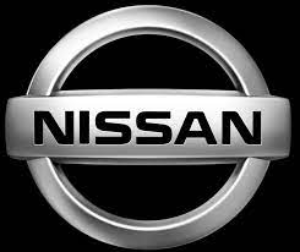
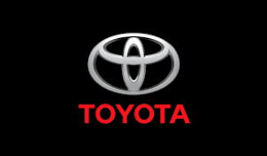
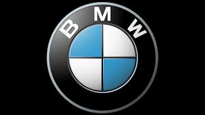
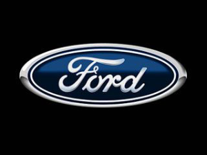
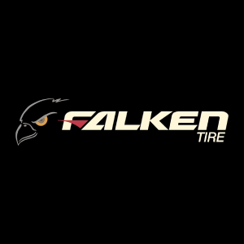

Galeria
El drift es una emocionante forma de conducción y deporte de motor que ha cautivado a entusiastas de los automóviles en todo el mundo. Esta técnica única, que implica controlar intencionadamente el deslizamiento de las ruedas traseras para derrapar de manera controlada alrededor de curvas, combina habilidad, potencia y precisión. En esta página, exploraremos la historia, las técnicas, los vehículos y la cultura que rodea al apasionante mundo del drift.
El drift se originó en Japón en la década de 1970, cuando los pilotos de carreras buscaron formas de negociar las curvas cerradas y estrechas de las montañas y carreteras japonesas.Kunimitsu Takahashi y Keiichi Tsuchiya fueron figuras clave en la popularización del drift como una técnica de conducción y deporte.
¿QUERES APRENDER A HACER DRIFT?
MARCA
DESCRIPCIÓN
 Vehículos populares para el drift, como el Nissan 240SX o Nissan 350Z. Ofrece piezas de rendimiento.

Modelos como el Toyota AE86 son icónicos en el mundo del drift.

Los modelos de la serie M de BMW son populares para el drift.
 Algunos modelos de la serie Mustang son utilizados en el drift.
 Fabricante de neumáticos de alto rendimiento utilizados en el drift.
Ofrece una amplia gama de piezas de rendimiento para vehículos de drift.
Fabrica kits de suspensión ajustable específicos para drift.
Estas son algunas marcas destacadas en la industria del DRIFT
VIDEO
Carrera de Drift
Control de Tracción
Frenos de Mano
Zona de Derrape
Coche de Drift
Técnica de Contravolante
VIDEO
Coche de Drift: Un vehículo especialmente modificado para realizar derrapes controlados.
Neumáticos de Drift: Neumáticos diseñados específicamente para permitir un mejor deslizamiento lateral.
Ángulo de Derrape: La inclinación del vehículo en una curva mientras se derrapa.
Control de Tracción: Un sistema que puede ajustarse para permitir o limitar el derrape.
Frenos de Mano: Utilizados para iniciar y controlar los derrapes.
Técnica de Contravolante: Maniobra en la que el conductor gira el volante en la dirección opuesta al derrape para mantener el control.
Los automóviles utilizados en el drift suelen ser modificados para mejorar el rendimiento y la estabilidad . Los modelos traseros de tracción, como el Nissan 240SX, el Toyota Supra y el BMW M3, son populares en la escena del drift debido a su capacidad para deslizar las ruedas traseras.
El drift ha evolucionado hasta convertirse en un deporte altamente competitivo. Eventos como el D1 Grand Prix en Japón y la Formula Drift en los Estados Unidos reúnen a los mejores pilotos para competir en emocionantes carreras de derrape.
El drift no es solo un deporte, sino también una subcultura apasionada . Los aficionados al DRIFT a menudo se reúnen en reuniones y eventos para compartir su amor por los automóviles y la conducción. Además, el drift ha influido en la música, la moda y el arte.
Es importante destacar que el drift es una disciplina que requiere habilidad y responsabilidad . Los pilotos deben tomar precauciones de seguridad, como el uso de cascos y la realización de sus actividades en entornos seguros y controlados.